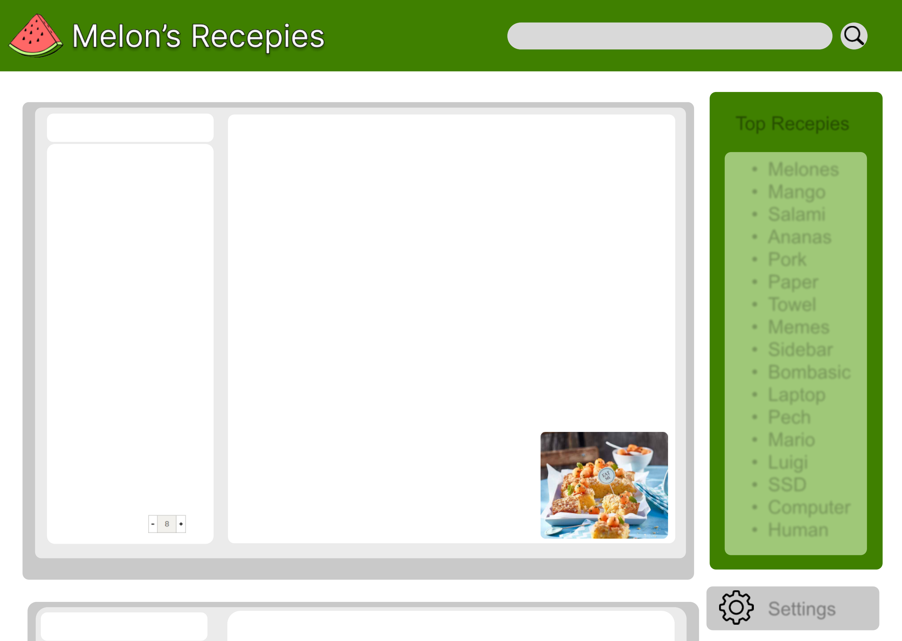

Text here:
Top Recepies
• Text
• Text
• Text
• Text
• Text
• Text
• Text
• Text
• Text
• Text
• Text
• Text
• Text
• Text
• Text
• Text
• Text
Settings
Anleitung:
2 Melonen (z. B. Charentais), halbiert,
entkernt
2 EL Puderzucker
1 EL Limettensaft
1 EL Zitronenmelisse, fein geschnitten
150 g Butter, weich
150 g Zucker
1 Prise Salz
3 Eier
250 g Mehl
1 TL Backpulver
1 TL Anis
100 g Mandelstifte
100 g Zucker
50 g Butter
Anz. Pers:
Melonen Kuchen
Von den Melonen so viele Kugeln ausstechen wie möglich, Fruchtfleisch
herauslösen, pürieren (ergibt ca. 1.5 dl). Melonenkugeln mit Puderzucker,
Limettensaft und Zitronenmelisse mischen, zugedeckt kühl stellen.
Butter in eine Schüssel geben, Zucker und Salz darunterrühren. Ein Ei nach
dem andern darunterrühren, weiterrühren, bis die Masse heller ist. 1.5 dl
Melonenpüree darunterühren.
Mehl, Backpulver und Anis mischen, unter die Masse mischen. Teig in der
vorbereiteten Form verteilen.
Mandeln, Zucker und Butter in einer Pfanne unter Rühren warm werden
lassen, bis die Butter geschmolzen ist, auf dem Teig verteilen.
Backen: ca. 25 Min. in der Mitte des auf 180 Grad vorgeheizten Ofens.
Herausnehmen, in der Form auf einem Gitter auskühlen. Melonenkugeln
darauf verteilen oder dazu servieren.
Random Kuchen
Anleitung:
Melonen Kuchen
Zeit: 10 min